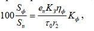

Лекция 10. Производственное освещение
Лекция 10. Производственное освещение
План
1. Оптическая область спектра.
2. Основные понятия, характеризующие свет.
3. Гигиенические требования к производственному освещению.
4. Виды производственного освещения и его нормирование. 5. Светотехнические расчеты.
Свет ощущается в оптической области спектра электромагнитного излучения. Видимая область оптических излучений лежит в диапазоне длин волн от 380 до 760 нм; с одной стороны к ней примыкает область УФ, а с другой – инфракрасных излучений.
В видимой области излучения каждой длине волны соответствует определенный цвет от фиолетового (380…450 нм) до красного (620…760 нм). Свет имеет сложный состав и состоит из волн различной длины.
Основными понятиями, характеризующими свет, являютсясветовой поток, сила света, освещенность и яркость.
Световым потокомназывают поток лучистой энергии, оцениваемый глазом по световому ощущению. Единицей светового потока являетсялюмен(лм) – световой поток, излучаемый точечным источником света силой в одну канделу, помещенным в вершину телесного угла в один стерадиан.
Распределение светового потока от источника излучения в окружающем пространстве неравномерно. Поэтому один световой поток не может являться исчерпывающей характеристикой источника излучения. Необходимо знать характеристику распределения светового потока в пространстве.
Пространственную плотность светового потока принято называтьсилой света.Единицей силы света является кандела (кд) – сила света точечного источника, испускающего световой поток в один люмен, равномерно распределенный внутри телесного угла в один стерадиан. Кандела является основной светотехнической единицей, установленной по специальному эталону.
ОсвещенностьЕ характеризует поверхностную плотность светового потока и определяется отношением светового потока, падающего на поверхность, к ее площади:
где Ф – световой поток; S – площадь.
Освещенность не зависит от свойств освещаемой поверхности. Одинаковый световой поток создает равную освещенность на темных и светлых поверхностях при условии равенства площадей. Единицей освещенности является люкс (лк). Один люкс равен освещенности поверхности площадью в 1 м2, по которой равномерно распределен световой поток, равный 1 лм. Освещенность в 1 лк не позволяет выполнять большинство видов работ. Оценить понятие освещенность можно, зная, что освещенность Земли в лунную ночь составляет примерно 0,2 лк, а в солнечный день доходит до 100 000 лк.
Так как уровень ощущения света человеческим глазом зависит от плотности светового потока (освещенности) на сетчатке глаза, то основное значение для зрения имеет не освещенность какой-то поверхности, а световой поток, отраженный от этой поверхности и попадающий на зрачок. В связи с этим введено понятиеяркости.Человек различает окружающие предметы только благодаря тому, что они имеют разную яркость.
ЯркостьюL называется величина, равная отношению силы света, излучаемого элементом поверхности в данном направлении, к площади проекции этой поверхности на плоскость, перпендикулярную к тому же направлению:
где I – сила света, излучаемая поверхностью в заданном направлении,
кд;
S – площадь поверхности, м2;
- угол к нормали светящейся поверхности.
Некоторое представление о яркости можно получить, если представить себе, что лист белой бумаги, освещенный настольной лампой мощностью 60 Вт, имеет яркость 30…40 кд/м2.
Падающий на тело световой поток частично отражается им, частично поглощается, частично пропускается сквозь среду тела. Для характеристики этих свойств введены соответствующие коэффициенты.Коэффициент отражения представляет собой отношение отраженного телом светового потока Фк падающему Ф:
Свет влияет на состояние высших психических функций и физиологические процессы в организме. Хорошее освещение действует тонизирующее, создает хорошее настроение, улучшает протекание основных процессов высшей нервной деятельности.
В зависимости от спектрального состава свет может оказывать возбуждающее действие и усиливать чувство тепла (оражево-красный), или наоборот, – успокаивающее (желто-зеленый), или усиливать тормозные процессы (сине-фиолетовый).
Освещение рабочих поверхностей сильно влияет на производительность труда сотрудников с большим объемом зрительных работ. В таких условиях увеличение освещенности в 10 раз (от 100…150 до 1000 …1500 лк) приводит к росту производительности труда на 5-6 % для работ средней сложности и на 15,5 % - для работ высшей сложности.
При плохом освещении человек быстро устает, работает менее продуктивно, возникает потенциальная опасность ошибочных действий и несчастных случаев. Это ведет также к такому заболеванию как рабочая миопия (близорукость), спазм аккомодации. Без естественного света, может возникнуть световое голодание.
Гигиенические требованияк производственному освещению:
– спектральный состав света искусственных источников должен приближаться к солнечному;
– уровень освещенности должен учитывать условия зрительной работы;
– должна быть обеспечена равномерность и устойчивость уровня освещенности в помещении во избежание частой переадаптации и утомления зрения. В то же время, при длительной работе в равномерно освещенном пространстве может нарушаться восприятие формы объектов, реализующее-ся в зрительных галлюцинациях.
Виды производственного освещения и его нормирование.
Освещение бывает естественным и искусственным.Естественное освещениепомещений может осуществляться через окна в боковых стенах (боковое), через верхние проемы, фонари (верхнее) или их комбинацией – комбинированное. Верхнее и комбинированное естественное освещение обеспечивает равномерное освещение помещений. Боковое освещение создает неравномерность в освещении участков, расположенных вблизи окон и вдали от них.
Непостоянство естественного света вызывает необходимость его нормировать с помощьюкоэффициента естественной освещенности (КЕО) е. КЕО – представляет собой отношение освещенности естественным светом какой-либо точки внутри помещения к значению наружной освещенности горизонтальной поверхности, освещаемой диффузным светом полностью открытого небосвода (не прямым солнечным светом) и выражается в процентах: ЕВН
где ЕВН– освещенность какой либо точки внутри помещения; ЕНАР– освещенность точки вне помещения.
Нормирование значений КЕО (ен) зависит от характера зрительной работы, вида освещения (естественное или совмещенное), пояса светового климата. Для зданий, расположенных в I, II, IV и V поясах светового климата, енопределяется по выражению енI, II, 1V, V =енIIImC,
где енIII– значение КЕО для III пояса светового климата, определяемое
по нормам «Естественное и искусственное освещение» (СНиП II-4-79);m– коэффициент светового климата для данной местности,
определяемый по таблице в СНиП II-4-79;
С – коэффициент солнечности климата, учитывающий дополнительный световой поток, проникающий через световые проемы в помещение в течение года.
Расчет естественного освещения заключается в определении площади световых проемов (окон, фонарей) в соответствии с нормированным значением КЕО.
Расчет площади световых проемов:
при боковом освещении
при верхнем освещении
где S0– площадь световых проемов окон при боковом освещении; Sn– площадь пола помещения; еn– нормированное значение КЕО;
Кз– коэффициент запаса (1,2…2); 0– световая характеристика окон;
Кзд– коэффициент, учитывающий затенение окон противостоящими зданиями;
0– общий коэффициент светопропускания, учитывающий коэффициент светопропускания стекол и потери света в несущих конструкциях, в солнцезащитных устройствах, в защитной сетке, установленной над фонарями; r1– коэффициент, учитывающий повышение КЕО при боковом освещении благодаря свету, отраженному от поверхностей помещения и подстилающего слоя (земля, трава и др.), прилегающего к зданию;
Sф– площадь световых проемов фонарей при верхнем освещении; ф– световая характеристика фонаря или светового проема в плоскости покрытия; r2– коэффициент, учитывающий повышение КЕО при верхнем
освещении благодаря свету, отраженному от поверхностей помещения; Кф– коэффициент, учитывающий тип фонаря.
Уровень естественной освещенности снижается из-за загрязнений стекол, поверхностей стен и потолков, их следует регулярно очищать.
При недостаточности естественного освещения используют искусственное освещение. Оно подразделяется: на рабочее, аварийное, эвакуационное и охранное и проектируется в виде двух систем: общее и комбинированное. К общему освещению может быть добавлено и местное.
Общее освещениепредназначено для освещения всего помещения, оно может быть равномерным, освещая все пространство, или локализованным (создает большее освещение на рабочих местах).
Комбинированное освещениесостоит из общего и местного. Его используют при работах высокой точности, или, в случае необходимости, для изменяемого направления света.Местное освещениепредназначено только для рабочих поверхностей и может быть стационарным или переносным. Применение только местного освещения в производственных помещениях запрещается.
Освещенность рабочих поверхностей регламентируется СНиП II-4-79. Эти нормы носят межотраслевой характер. На их основе разрабатываются нормы для отдельных отраслей промышленности. Нормы рассчитаны на применение газоразрядных ламп, но могут быть использованы и лампы накаливания. Нормами установлено 8 разрядов зрительных работ – от работ наивысшей точности (I разряд) (размер объекта различения менее 0,15 мм) к IV – работы малой точности (размер объекта различения более 5 мм); к VII разряду отнесены работы со светящимися материалами и изделиями в горячих цехах; к VIII – работы, связанные с общим наблюдением за ходом технологического процесса.
В основу выбора КЕО первых семи разрядов положенразмер объекта различения,под которым рассматриваемый предмет или его часть, а также требующий различия дефект (нить ткани, точка, линия, рисунок, пятно и т.п.).
Для первых пяти разрядов, имеющих по 4 подразряда (а, б, в, г), нормируемые значения освещенности зависят не только от минимального размера объекта различения, но и от контраста объекта различения с фоном и характеристики фона. Наибольшая нормируемая освещенность составляет 5000 лк (разряд 1а), наименьшая – 30 лк. При таком освещении нельзя наблюдать за показаниями каких-либо приборов и вести записи.
При необходимости уровни нормируемой освещенности могут быть повышены или понижены.
В нормах указано, что отношение максимальной освещенности к минимальной не должно превышать для работ I…III разрядов при люминесцентных лампах 1,5; при других – 2. Освещенность проходов может быть меньше освещенности рабочих зон, но не менее 75 лк при газоразрядных лампах и 30 лк при лампах накаливания.
Хорошее освещение не должно вызывать ослепленности.Показатель ослепленностиР служит для оценки слепящего действия осветительной установки и подсчитывается по выражению Р = (W – 1)100%, где W – коэффициент ослепленности.
Качество освещения газоразрядных ламп характеризуетсякоэффициентом пульсации освещенности,который не должен превышать 10…20 %.
Коэффициент пульсации освещенности Кпхарактеризует амплитуду колебаний освещенности в результате изменения во времени светового потока газоразрядных ламп при питании их переменным током:

где Емакс, Емин и Еср– соответственно максимальное, минимальное и
среднее значения освещенности за период ее колебания.
Нормы регламентируют освещенность рабочих поверхностей, расположенных и вне зданий. Предусмотрено 5 разрядов зрительных работ (IX…XIII) с требуемой освещенностью от 50 до 2 лк.
Кроме рабочего освещения нормами предусмотрено устройство аварийного, эвакуационного и охранного освещения.
Аварийное освещениенеобходимо, если отключение рабочего освещения и связанное с этим нарушение обслуживания оборудования может привести к взрыву, пожару, длительному нарушению технологического процесса, нарушению работы электростанций, насосных установок водоснабжения, узлов связи и т.п. Наименьшая аварийная освещенность должна составлять 5% от рабочего освещения, но не менее 2 лк внутри зданий и не менее 1 лк для территории предприятия.
Эвакуационное освещениепредназначено для безопасной эвакуации людей и должно предусматриваться:
– в местах, опасных для прохода людей;
– в проходах и на лестницах, при числе служащих более 50 человек;
– по основным проходам производственных помещений, где работает более 50 человек;
– в производственных помещениях, где выход людей связан с опасностью их травмирования из-за продолжения работы производственного оборудования;
– в помещениях общественных зданий, где находятся более 100 человек.
Охранное освещениепредусматривается вдоль границ территорий, охраняемых в ночное время; оно должно обеспечить освещенность 0,5 лк на уровне земли.
Источники искусственного света.
В качестве источников искусственного света применяются лампы накаливания и газоразрядные лампы. В лампах накаливания источником света является раскаленная проволока из вольфрама. Они дают непрерывный спектр излучения с преобладанием желто-красных лучей по сравнению с естественным светом. Лампы накаливания бывают вакуумные (НВ), газонаполненные (НГ), бесспиральные (НБ), бесспериальные с криптоноксеноновым наполнением (НБК), зеркальные лампы (З) и другие. Лампы накаливания с иодным циклом большой мощности (от 250 до 2200 Вт) имеют срок службы до 2000 ч.
Общим недостатком ламп накаливания является небольшой срок службы около 1000ч и малый КПД.
Применяются и газоразрядные лампы низкого (люминесцентные) и высокого давления (дуговые ртутные люминесцентные лампы, рефлекторные дуговые ртутные лампы с отражающим слоем).
Газоразрядные лампы низкого давления представляют собой трубку, внутренняя поверхность которой покрыта тонким слоем твердого кристаллического вещества – люминофора. Колба лампы наполнена дозированным количеством ртути (30…80 мг) и инертным газом (обычно аргоном). По обоим концам трубки укреплены электроды. При включении лампы электрический ток, протекающий между электродами, вызывает в парах ртути электрический разряд, сопровождающийся излучением (электролюминесценция). Это излучение, воздействуя на люминофор, преобразуется в световое излучение (фотолюминесценция). В зависимости от состава люминофора люминесцентные лампы обладают различной цветностью: ЛД – лампы дневного света, ЛЕ – лампы естественного света, ЛБ – лампы белого света и др.
Наиболее экономичными являются ртутные лампы высокого давления (0,03…0,08 МПа) с добавкой иодидов металла (ДРИ), их часто называют металлогалогенными. Светоотдача этих ламп достигает 80 лм/Вт, в то время как у ламп ДРЛ ( дуговые ртутные люминесцентные лампы сверхвысокого давления 0,8 МПа) – 40…60 лм/Вт.
Трубчатые ксеноновые газоразрядные лампы высокого давления ДКсТ, имеющие мощность от 2 до 100 кВт, применяются в основном для наружного освещения в связи с опасностью УФ-облучения работающих в помещении.
Основным преимуществом газоразрядных ламп является их экономичность. Световая отдача этих ламп колеблется в пределах 30…80 лм/Вт, что в 3…4 раза превышает световую отдачу ламп накаливания. Срок их службы доходит до 10 000 ч и они имеют гигиенические преимущества: равномерное освещение, спектр их ближе к естественному.
К недостаткам газоразрядных ламп можно отнести пульсацию светового потока, слепящее действие, сложность схемы включения, шум дросселей, зависимость от температуры внешней среды. Они не могут использоваться при низких температурах, чувствительны к снижению номинального напряжения и уже при снижении на 10% и более лампы работают неустойчиво и могут погаснуть. Для лампы накаливания нижняя граница зрительного комфорта 30…50 лк, то для лампы ЛД составляет 400…500 лк. Это можно объяснить привычкой человека к большей освещенности при дневном свете и малой – при искусственном. Слабое люминесцентное освещение воспринимается как дневное в сумерках или перед грозой. Этот «сумеречный» эффект является одной из причин повышения норм освещенности при газоразрядных лампах.
Особенно неприятным свойством газоразрядных ламп, питающихся переменным током, является пульсация светового потока. Она может привести к возникновению стробоскопического эффекта, выражающегося в искажении восприятия вращающихся, движущихся или сменяющихся объектов в мелькающем свете. Вращающийся объект может казаться неподвижным или движущимся в обратном направлении.
Источники света располагают в осветительной арматуре и называют их светильником или осветительным прибором. Осветительные приборы дальнего действия называютпрожекторами. Осветительная арматура предназначена дл перераспределения светового потока в сторону рабочей поверхности, для защиты глаз от блесткости источника света, для предохранения и крепления ламп и подведения к ней электрического тока.
Перераспределение светового потока, осуществляемое светильником, ведет к определенной потере светового потока.
Для ограничения ослепленности отражателем создают защитный угол при помощи отражателя или экранирующей решетки, но не больше 30о. Светильники могут быть защищены от пыли, влаги, взрыва.
В настоящее время для освещения используются осветительные устройства большой протяженности – щелевые световоды, которые представляют собой полые цилиндрические трубы, внутренняя поверхность которых, за исключением светопропускающей щели, покрыта зеркально отражающим слоем. Через щель световой поток равномерно освещает окружающее пространство. Источником света служит мощная лампа накаливания или газоразрядная лампа в конце трубы или в обоих концах трубы.
Светотехнический расчет может быть выполнен:
– методом коэффициента использования;
– точечным методом;
– методом удельной мощности
Методкоэффициента использованиясостоит в определении значения коэффициента, равного отношению светового потока, падающего на расчетную поверхность, к полному потоку осветительного прибора. Затем определяют световой поток источника света, необходимый для создания заданной освещенности.
Сущностьрасчета по методу удельной мощностизаключается в том, что в зависимости от типа светильника и места его установки, высоты подвеса над рабочей поверхностью, освещенности на горизонтальной поверхности и площади помещения определяется значение удельной мощности.
Точечный методпредполагает определение светового потока при заданной условной освещенности, которая зависит от светораспределения светильника и геометрических размеров, выбирается это значение по графикам пространственных изолюкс.
Контрольные вопросы
1. Основные понятия, характеризующие свет: световой поток, сила света, освещенность и яркость.
2. Виды производственного освещения и его нормирование.
3. Какие основные формулы для расчета естественного освещения?
4. Источники искусственного света, их характеристики, достоинства и недостатки. 5. Методы светотехнических расчетов и их сущность.